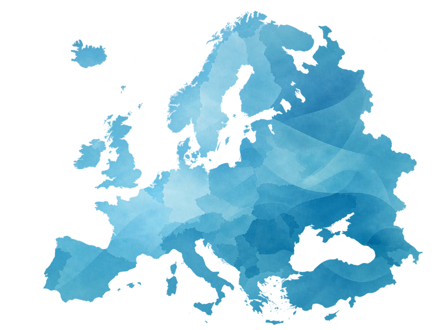
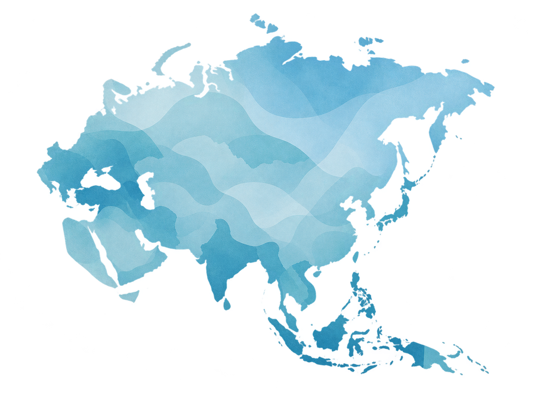
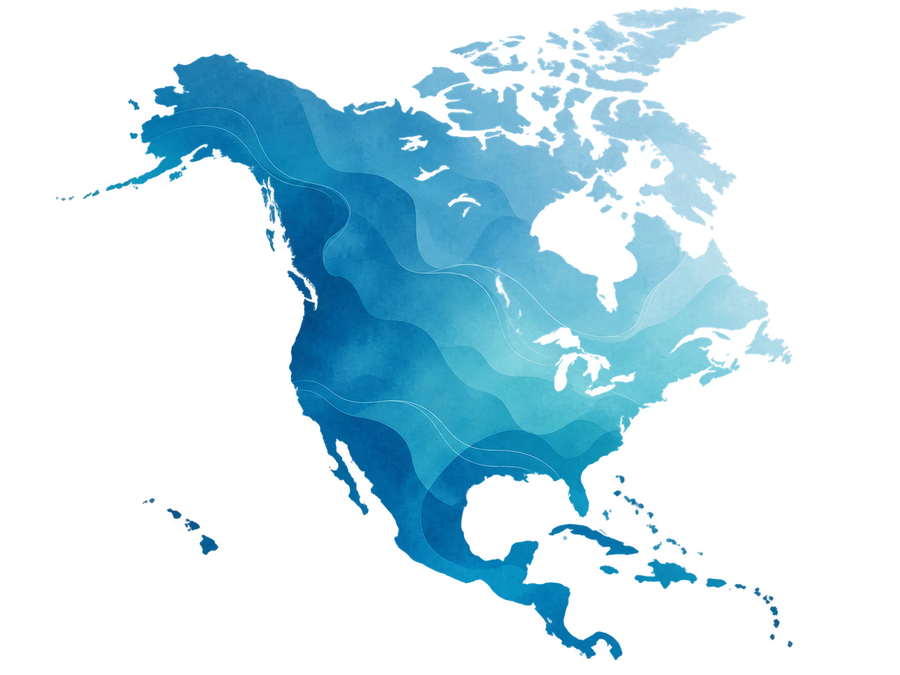
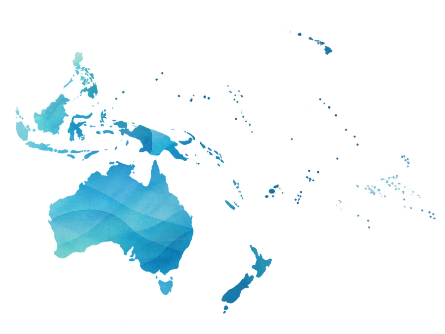
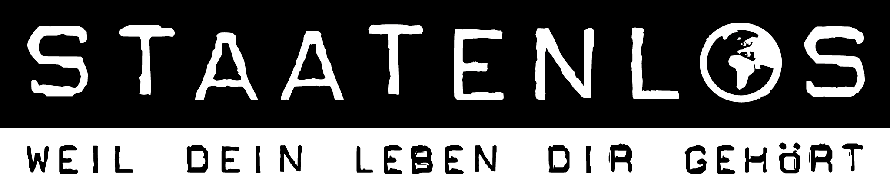

Digital freedom: what is this about?
Anyone who works remotely, travels, or is thinking about emigrating usually looks first at cost, safety, climate, and internet access. But at least as important is the question: how free and private is your digital everyday life in a given country?
A country can have fast internet and modern digital services – and still have far-reaching surveillance powers, weak oversight, or strong restrictions on online speech. That's why we don't look at a single score, but at several layers at once.
What is Freedom House, and why do we use it as a source?
Freedom House publishes international reports on political rights, civil liberties, and digital freedom. For our security series, Freedom House is one of several sources, because its reports allow international comparisons and its methodology is publicly documented.
Important: Freedom House is not our own rating. Official ratings are always labeled as an external source. Our Smart Remote Life Privacy Traffic Light is created separately, from several sources of information.
Among other things, the organization publishes the Freedom in the World and Freedom on the Net reports.
Go to the original source →Rates political rights and civil liberties. The report is not a dedicated privacy or surveillance ranking.
View the 2026 report →Examines human rights in the digital space, including access barriers, content restrictions, and violations of user rights.
View the 2025 report →What is Five Eyes?
Five Eyes is an especially close intelligence partnership between the USA, the United Kingdom, Canada, Australia, and New Zealand. The cooperation grew out of the UKUSA Agreement and in particular covers the exchange of intelligence information as well as signals intelligence – that is, electronic communications and signal reconnaissance.
For our comparison, Five Eyes is therefore a relevant characteristic. However, it is not a ranking of privacy or data protection.
Member states
Countries outside this alliance can also possess far-reaching surveillance powers and international intelligence cooperation.
How we analyze digital freedom and government surveillance
A single score isn't enough to assess digital freedom. That's why we examine several areas for each country and consistently distinguish between the legal situation, technical possibilities, and documented practice.
| Area | What we check | Why it matters |
|---|---|---|
| Privacy law | Laws, fundamental rights, individual claims, and the responsible authorities | What rights do people have against the state and companies? |
| Surveillance powers | Legal powers of police and intelligence services | What interventions may authorities carry out, and under what conditions? |
| Communications & devices | Access to communications, devices, or metadata, where provable | How far can investigative or security authorities go? |
| Data retention | Retention obligations, time limits, and access to stored data | What data remains available, and for how long? |
| Oversight | Courts, parliaments, data protection and supervisory authorities | How strictly are government interventions overseen? |
| Internet & freedom of expression | Censorship, network blocks, prosecution, and documented restrictions | How freely can people communicate online? |
| International cooperation | Five Eyes and other documented collaboration | Data exchange doesn't necessarily stop at the country's border. |
What does the Smart Remote Life Privacy Traffic Light mean?
In addition to official sources, we create our own editorial assessment. The traffic light is meant to make complex legal, oversight, and surveillance structures easier to understand quickly. It is not an official ranking and does not come from Freedom House or any other organization named here.
Strong rights and oversight, comparatively few indications of broad government digital surveillance.
Generally good protective mechanisms, but noticeable restrictions or relevant powers.
Significant surveillance capabilities, privacy problems, or weaker oversight.
Very far-reaching surveillance, weak oversight, massive digital restrictions, or censorship.
Which regions do we examine?
In the region guides, we compare selected countries using the same methodology in each case. This allows strong and problematic examples to be directly compared, without changing the criteria from region to region.





What can you do yourself for your digital freedom?
No single tool can make laws, government powers, or poor privacy standards disappear. Still, in everyday life you can do a lot to reduce unnecessary data traces and better protect your most important accounts, devices, and connections.
Digital self-defense therefore doesn't mean trying to make yourself completely invisible. It's more about consciously deciding which data you share, which services you trust, and which layers of protection you actually need for your personal situation.
- Use strong, unique passwords and, if possible, a password manager.
- Enable two-factor authentication for important accounts.
- Keep your operating system, browser, and apps up to date.
- Check app permissions and share only the data that's truly necessary.
- Be especially careful with public Wi-Fi and unfamiliar networks.
- Choose privacy and security tools based on your actual risk – not on marketing promises.
What does a VPN actually do?
A VPN encrypts the traffic between your device and the VPN provider, which can prevent your local network or internet provider from having the same direct view of your destination connections as they would without a VPN. At the same time, the VPN provider itself becomes a new point of trust.
A VPN doesn't automatically make you anonymous. Logged-in accounts, browser fingerprinting, cookies, or other data sources don't disappear because of it. That's why we see VPNs as one possible tool within a larger security concept – not as an all-purpose solution.
Sources & Transparency
Our country analyses are not based on a single organization. Depending on the country, we combine official laws, authorities, courts, oversight reports, and other reliable sources. The most important evidence is linked in the respective country sections.
Freedom House
Five Eyes / UKUSA
Digital Self-Defense & VPN
Data as of this main page: August 2026. Laws, reports, and political frameworks can change. The region and country guides therefore each have their own update status.